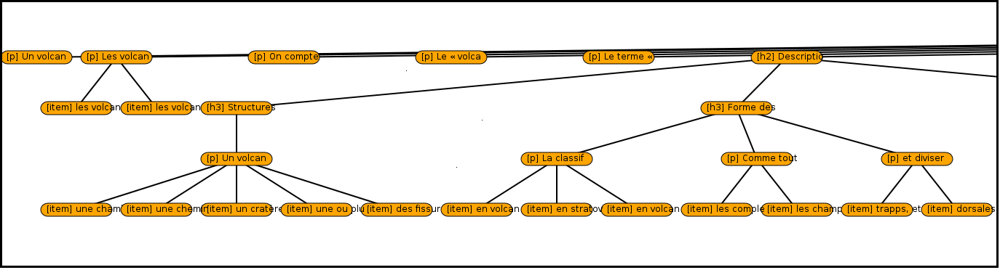

Jean-Philippe Fauconnier
Currently, I am a Research and Teaching Assistant at the Department of Mathematics and Computer Science, Université Toulouse Jean Jaurès. My research focuses on the analysis of the logical layout of documents and the task of relation extraction, mainly using supervised learning methods.
About
I have recently obtained my PhD in Computer Science at the Toulouse Institute of Computer Science Research, Université Paul Sabatier (France). My work has taken place under the supervision of Drs Mouna Kamel and Nathalie Aussenac-Gilles, and has focused on Document Analysis, Machine Learning and Natural Language Processing fields. More particularly, I was interested in the acquisition of lexical relations using the layout and the formatting of documents. Previously, I was graduated in Natural Language Processing at the Catholic University of Louvain (Belgium) in 2012. This Master's degree programme was delivered by the CENTAL laboratory.
Research Interests
Natural Language Processing
- Analysis: morpho-lexical analysis and syntactic parsing
- Corpora: development of annotation tools, annotation campaigns, and inter-rater agreement evaluation
- Meaning: ontology learning from text and Word embeddings
Document Analysis
- Logical modeling: links between physical layout structures and logical ones
- LR Parsing: statistical and context-free grammar parsing for building logical tree
Statistics
- Predictive modeling: supervised classification, structured prediction and unsupervised feature selection
- Descriptive analytics: statistical relationships and multivariate analysis
Works
National journal papers
- M. Kamel, B. Rothenburger, J.-P. Fauconnier. Identification de relations sémantiques portées par les structures énumératives paradigmatiques : une approche symbolique et une approche par apprentissage supervisé. Revue d'Intelligence Artificielle, Hermès Science, Numéro spécial Ingénierie des Connaissances. Nouvelles évolutions., Vol. 28, N. 2-3, p. 271-296, 2014.
International conference papers
- J.-P. Fauconnier, M. Kamel. Discovering Hypernymy Relations using Text Layout (regular paper). The Fourth Joint Conference on Lexical and Computational Semantics (*SEM 2015), Denver, Colorado, 2015. PDF
- J.-P. Fauconnier, M. Kamel, B. Rothenburger. A Supervised Machine Learning Approach for Taxonomic Relation Recognition through Non-linear Enumerative Structures (short paper). ACM Symposium on Applied Computing (SAC 2015), Salamanque, 2015. PDF
- J.-P. Fauconnier, M. Kamel, B. Rothenburger. Une typologie multi-dimensionnelle des structures énumératives pour l'identification des relations termino-ontologiques (regular paper). Conférence Internationale sur la Terminologie et l'Intelligence Artificielle (TIA 2013), Paris, Université Paris 13, p. 137-144, 2013. PDF
National conference papers
- J.-P. Fauconnier, L. Sorin, M. Kamel, Mustapha Mojahid, N. Aussenac-Gilles. Détection automatique de la structure organisationnelle de documents à partir de marqueurs visuels et lexicaux (regular paper). Traitement Automatique des Langues Naturelles (TALN 2014), Marseille, Association pour le Traitement Automatique des Langues (ATALA), p. 340-351, 2014. PDF
- J.-P. Fauconnier, M. Kamel, B. Rothenburger, N. Aussenac-Gilles. Apprentissage supervisé pour l'identification de relations sémantiques au sein de structures énumératives parallèles (regular paper). Traitement Automatique des Langues Naturelles (TALN 2013), Les Sables d'Olonne, Association pour le Traitement Automatique des Langues (ATALA), p. 132-145, 2013. PDF
Phd Thesis
- J.-P. Fauconnier, Acquisition de liens sémantiques à partir d'éléments de mise en forme des textes : exploitation des structures énumératives (PhD Thesis). Université de Toulouse, 2016. PDF HAL
Talks
- J.-P. Fauconnier. La mise en forme des textes : un indice supplémentaire pour l'identification des relations hiérarchiques (talk). Séminaire de l'équipe TALEP, Laboratoire d'Informatique Fondamentale de Marseille, 20-05-16.
- J.-P. Fauconnier. Mise en forme et indices linguistiques de surface pour l'extraction de connaissances (talk). Journées d'étude internationales S'caladis, Université Toulouse Jean Jaurès, Toulouse, 19-11-15. Abstract
- J.-P. Fauconnier, M. Kamel, N. Aussenac-Gilles. Acquisition de relations sémantiques à partir d’éléments de mise en forme des textes (talk). Séminaires du CENTAL, Université Catholique de Louvain, Louvain-la-Neuve, 21-11-14. PDF
- J.-P. Fauconnier. Métriques pour l’évaluation de l’annotation (talk). Séminaires de l’équipe MELODI, Université Paul Sabatier, Toulouse, 25-11-13. Link
- J.-P. Fauconnier, M. Kamel, N. Aussenac-Gilles. A Supervised Learning for the Identification of Semantic Relations in Parallel Enumerative Structures (poster). The 10th Summer School on Ontology Engineering and the Semantic Web (SSSW 2013), Cercédilla, 10-07-13. PDF
- J.-P. Fauconnier. Classifieur d’Entropie Maximale (MaxEnt) (talk). Séminaires de l’équipe MELODI, Université Paul Sabatier, Toulouse, 15-02-13. Link
- A. Urieli, J.-P. Fauconnier. PosTagger et Parseur Talismane (talk). Séminaires de l’Axe TAL, CLLE-ERSS, Toulouse, 20-06-12. PDF
- J.-P. Fauconnier, J. Roumier, F. Estiévenart. Musonto - A Semantic Search Engine dedicated to Music and Musicians (talk). Music Linked Data Workshop, JISC, Londres, 12-05-11. Link
Teaching
2015-2016
- Algorithms and C++ Programming - 54 hours - Université Jean Jaurès (Toulouse, France)
- Relational Database - 44 hours - Université Jean Jaurès (Toulouse, France)
- Web Integration - 40 hours - Université Jean Jaurès (Toulouse, France)
- C2I Certification - 36 hours - Université Jean Jaurès (Toulouse, France)
- XML technologies - 12 hours - Université Jean Jaurès (Toulouse, France)
- Semantic Web - 4 hours - Université Jean Jaurès (Toulouse, France)
2014-2015
- Web Integration - 24 hours - Institut Universitaire de Technologie (Tarbes, France)
- Relational Database - 18 hours - Institut Universitaire de Technologie (Tarbes, France)
- Web Integration - 18 hours - Institut Universitaire de Technologie (Tarbes, France)
2013-2014
- Web Integration - 36 hours - Institut Universitaire de Technologie (Tarbes, France)
- Relational Database - 12 hours - Institut Universitaire de Technologie (Tarbes, France)
- Information System - 12 hours - Institut Universitaire de Technologie (Tarbes, France)
2012-2013
- Office Automation - 40 hours - Institut Universitaire de Technologie (Tarbes, France)
- Office Automation - 24 hours - Institut Universitaire de Technologie (Tarbes, France)
Software
Most of resources are located on my github repository. The fast way to download a given resource is to use git:
$ mkdir resource
$ cd resource
$ git clone https://github.com/fauconnier/resourcePersonal softwares
AMI (Another Maxent Implementation) is a R implementation of multinomial logistic regression, also known as Maximum Entropy classifier. This implementation deals with binary and real-valued features and uses standard R functions to optimize the objective. Then, it is possible to use several iterative methods: LM-BFGS, Conjugate Gradient, Gradient Descent and Generalized Iterative Scaling.

LARAt (Layout Annotation for Relation Acquisition tool), pronounced /laʁa/, is an annotation tool which supports the layout and the formatting of HTML documents. LARAt was used during an annotation campaign in 2013 and, in his current state, is dedicated to the annotation of enumerative structures. The typology implemented is the one described in the TIA 2013 paper.
LaToe (Layout Annotation for Textual Object Extraction) is a tool which extracts the text layout from HTML, MediaWiki, or PDF documents for identifying specific textual objects (such as enumerative structures). Currently, the CRF model used for the PDF analyzer was trained on a small corpus (LING_GEOP). This implies that LaToe could be not efficient for unseen PDF documents with specific formatting.
Source code reviews
Code review of a C++ library for maximum entropy classification. On his website, Tsuruoka proposed a fast implementation of a multinomial logistic regression. In order to get a better and deeper understanding of implementation details, I propose a simple code review. The code base is relatively small (around 2500 lines of code). Those notes are primary intended for my personal use and reflect my current understanding. I propose them here, in case it could help someone. Note that this document is currently a work in progress.
Data
Annotated copora
- corpus-LARA: The corpus LARA is a French corpus of Wikipedia pages annotated with enumerative structures.
- corpus-LING_GEOP: LING_GEOP is a corpus with visual and logical clues. The PDF documents come from ANNODIS-ME.
Word embeddings models
Some word2vec models in French.
frWac2Vec
FrWac corpus, 1.6 billion of words.
| Lem | Pos | Phrase | Train | Dim | Cutoff | |
| bin (2.7Gb) | - | - | - | cbow | 200 | 0 |
| bin (120Mb) | - | - | - | cbow | 200 | 100 |
| bin (120Mb) | - | - | - | skip | 200 | 100 |
| bin (298Mb) | - | - | - | skip | 500 | 100 |
| bin (202Mb) | - | - | - | skip | 500 | 200 |
| bin (229Mb) | ∨ | - | - | cbow | 500 | 100 |
| bin (229Mb) | ∨ | - | - | skip | 500 | 100 |
| bin (494Mb) | ∨ | - | - | skip | 700 | 50 |
| bin (577Mb) | ∨ | ∨ | - | skip | 700 | 50 |
| bin (520Mb) | ∨ | ∨ | - | skip | 1000 | 100 |
| bin (2Gb) | ∨ | - | ∨ | cbow | 500 | 10 |
| bin (289Mb) | ∨ | - | ∨ | cbow | 500 | 100 |
frWiki2Vec
FrWiki dump (raw file), 600 millions of words.
| Lem | Pos | Phrase | Train | Dim | Cutoff | |
| bin (253Mb) | - | - | - | cbow | 1000 | 100 |
| bin (195Mb) | - | - | - | cbow | 1000 | 200 |
| bin (253Mb) | - | - | - | skip | 1000 | 100 |
| bin (195Mb) | - | - | - | skip | 1000 | 200 |
| bin (128Mb) | ∨ | - | - | cbow | 500 | 10 |
| bin (106Mb) | ∨ | - | - | cbow | 700 | 100 |
| bin (151Mb) | ∨ | - | - | skip | 1000 | 100 |
| bin (121Mb) | ∨ | - | - | skip | 1000 | 200 |
Experience
Laboratory life
- Member of the IRIT doctoral committee
- Member of the JéTou 2015 organization committee
Review
- Subreviewer for ISWC 2016
- Subreviewer for ISWC 2014 (Springer)
- Subreviewer for K-CAP 2013 (ACM)
Jobs & internships
- Axe TAL, CLEE-ERSS, Université Toulouse II, 2012. Evaluation of the French Talismane parser.
- Division ICT, Federal Agency for Medicines and Health Products, Belgium, 2011. Treatment of EudraCT data.
- Software & Technologies, CETIC, Belgium, 2010. Development of the semantic search engine MusOnto.
- Division PRE, Federal Agency for Medicines and Health Products, Belgium, 2009. Database integrity verification.